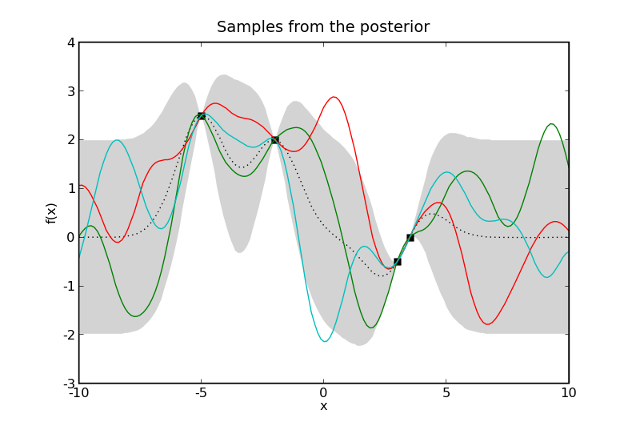
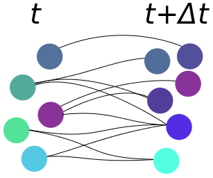

MaxEnt
...in ecology & evolution
Comprehensive examination on:
J Harte, T Zillio, E Conlisk, and AB Smith. Maximum entropy and the state-variable approach to macroecology. Ecology 89:2700-2711, 2008. http://dx.doi.org/10.1890/07-1369.1.
MaxEnt in a nutshell
“(A) The prior probabilities represent our prior information, and are to be determined, not by introspection, but by logical analysis of that information.
(B) Since the final conclusions depend necessarily on both the prior information and the data, it follows that, in formulating a problem, one must specify that prior information to be used just as fully as one specifies the data.
(C) Our goal is that inferences are to be completely objective in the sense that two persons with the same prior information must assign the same prior probabilities.”
- Jaynes' Logic of Science p. 373.
MaxEnt in a nutshell
Entropy is {disorder, ignorance}.

MaxEnt in a nutshell
Knowing \(x\)'s mean we get the exponential.

MaxEnt in a nutshell
Knowing \(x\)'s mean and variance we get the normal distribution.

MaxEnt in a nutshell
- The gist of it: maximizing entropy is maximizing ignorance.
- Jeffreys prior: invariance under reparameterization.
- Minimum description length: minimizing complexity (Occam's razor).
- Very controversial as a general method of inference...
- Much less controversial in ML, where it performs well for many tasks.
METE: Predictions
SAR: Species-area relationship
EAR: Endemics-area relationship
SAD: Species-abundance distribution
AER: Abundance-energy relationship
METE's parameters
Area of the ecosystem \(A_0\).
The number of individuals \(N_0\) in \(A_0\).
The summed metabolic energy rate of all individuals \(E_0\) in \(A_0\).
Number of species \(S_0\) in \(A_0\).
MaxEnt in METE
Two distributions
1: \(R(n, \varepsilon)\) is the joint distribution of species abundances \(n\) and energy demand \(\varepsilon\).
2: \(P_A^{j}(n)\) is the spatial abundance distribution defined as the probability of finding \(n\) individuals of species \(n\) within some subset \(A \subseteq A_0\).
Key point: these two distributions, subjected to a few constraints, are enough to generate predictions for the SAD, SAR, AER, and EAR.
Predictions
\(SAD(n) = \frac{\exp(-\lambda_{1}n)}{n\ln(\lambda_{1}^{-1})},\)
\(AER(n) = \frac{\lambda_{1}\lambda_{2}\exp(-(\lambda_{1} + \lambda_{2}\varepsilon))}{\left(1 - \exp(-(\lambda_{1} + \lambda_{2}\varepsilon))\right)^2},\)
\(SAR(A) = S_{0}\sum_{n_{0} = 1}\left(1 - \frac{1}{\sum \exp(-\lambda n)}\right)SAD(n_{0}),\)
\(EAR(A) = S_{0}\sum_{n_0= 1}^{N_0} \frac{\exp(-\lambda_pn_0)}{\sum_{n=1}^{n_0}\exp(-\lambda_pn)}SAD(n_0).\)
Mathematically proven?
“[...] we re-emphasize that MaxEnt is a mathematically proven method for inferring the most likely probability distribution if our knowledge about that distribution can be described as a set of constraints on the distribution” - Harte et al. (2008).
...but proven under what system?

“No Free Lunch Theorem” (Wolpert, 1997)
Alternatives to MaxEnt
Machine learning as a second order process
\[\mbox{human} \mapsto (m: x \mapsto y),\] \[\mbox{human} \mapsto (a: x_0 \mapsto (m: x_1 \mapsto y)).\]Support Vector Machines

1. Maximizing margins
Gaussian Processes

2. Bayesian form of SVMs (Murphy 2011), so it's better! Well no... Scales as \(\mathcal{O}(n^3)\) to the number of data points.
Artificial Neural Networks

3. Arguably the most effective branch of machine learning. Axioms, what's that?
4. Getting a good model is a dark art.
METE & Evolution
- We can add processes (“mechanisms”) through constraints.
- Harte & Newman (2014) says evolutionary dynamics might explain some deviations (i.e.: bad predictions) from MaxEnt.
Why not try to build a mathematical framework to integrate constraints based on evolutionary theory.
METE & Evolution
Wish list:
- Should be flexible enough to allow most, if not all, evolutionary processes to be translated as contraints when information is available.
- Should not pollute METE with too many unreasonable assumptions.
- Should be a true bridge to evolutionary theory.
METE & Evolution
Issues:
- Evolutionary mechanisms (selection, drift, draft, mutation) interact in complex ways.
- Evolutionary theory has its own issues: no unifying theory to predict molecular changes.
- Evolution is based on theoretical population genetics, which is based on many more or less reasonable assumptions (infinite/fixed population size, fixed selection, no recombination...).
- Yet rejecting these foundations would be unification in name only, since the corpus of knowledge accumulated could not be used.
METE & Evolution
The useless Price theorem:
\[\Delta \overline{\phi} = \overline{W}^{-1}\left(\mbox{cov}(W, \phi) + E(W\bar{\delta})\right).\]Probabilistic version here & here.
Population vs Community?
METE & Evolution
Two examples:
- In a closed population (no migration), change in mean phenotype is inversely proportional to mean population fitness.
- In an open population (with immigrants), change in mean phenotype is inversely proportional to the per capita growth rate.
METE & Evolution
Difficulties
- Many possible contraints from the probabilistic Price theorem: no single theory in sight.
- ASNE needs to be extended with traits, and perhaps be made dynamics, and perhaps lose both S and N in favor of traits.
- There is no guarantee that constraints in the probabilistc Price can be converted into useful MaxEnt constraints.